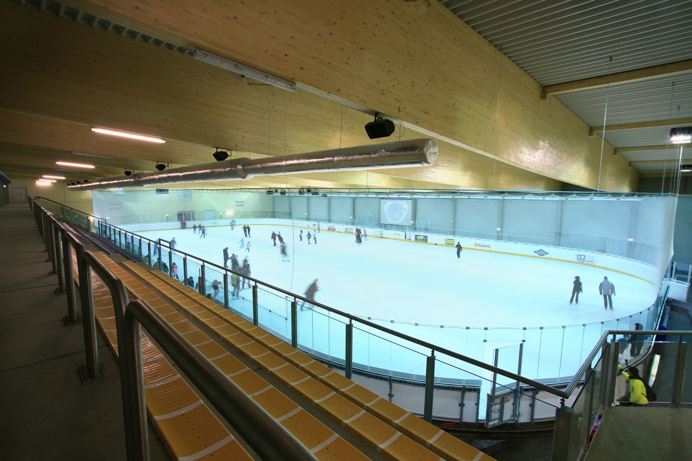
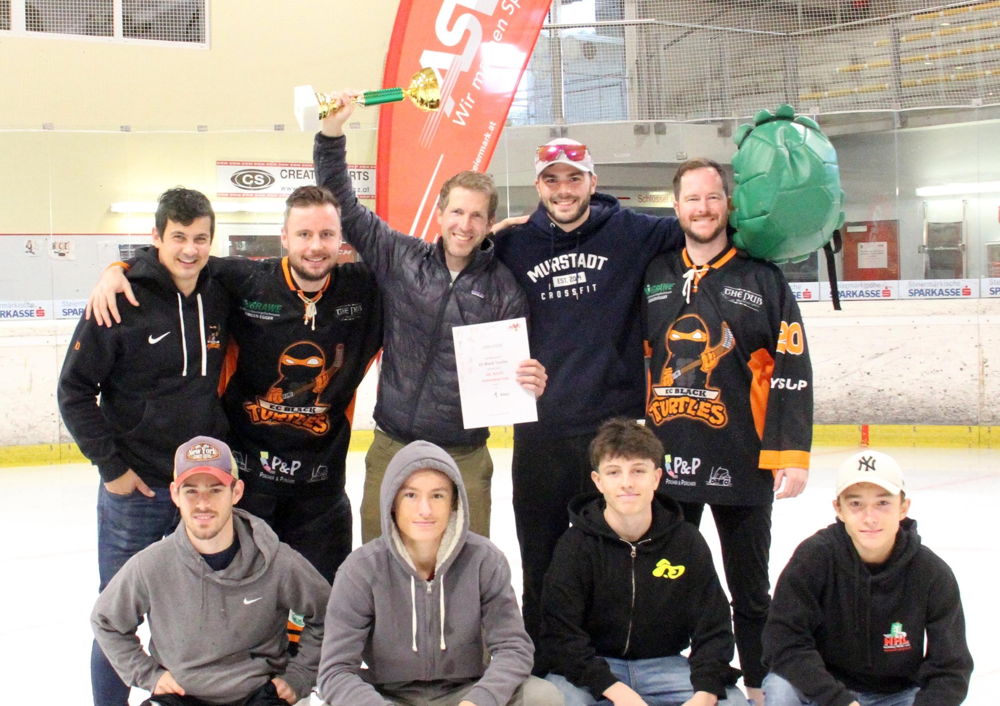

EISHOCKEY AUS GRAZ
BLACK
TURTLESGRAZ.
Leidenschaft auf dem Eis.
Zusammen ein Team.
SPIELTAG / LIVE
HOCKEY.
IN ECHTZEIT.
Spielstand, Tore und Livestream.
Am Spieltag bist du hier dabei.
LIVE-TICKER
NÄCHSTES SPIELLIVESTREAM
NHL GRAZDer Stream wird zum laufenden Turtles-Spiel freigeschaltet, sobald die Übertragung bestätigt ist.
Originalübertragung und Spieldaten: NHL Graz. Die Verfügbarkeit richtet sich nach dem Ligabetrieb.
01 / UNSER VEREIN
AUS GRAZ.
FÜRS EISHOCKEY.
Auf dem Eis zählt das Miteinander. Wir sind die Black Turtles – ein Grazer Team in der Gruppe A der NHL Graz.
Unsere sportliche Heimat ist die Eishalle Hart bei Graz. Hier stehen Begegnungen, gemeinsamer Einsatz und die Freude am Hockey im Mittelpunkt.
Unser Team bei NHL GrazEISHOCKEY & INLINEHOCKEY
GRAZ · STEIERMARK02 / DIE SAISON
WIR SEHEN UNS
AUF DEM EIS.
Grunddurchgang · Gruppe A
Eishalle Hart bei Graz
DIE SAISON IN DEINEM KALENDER.
Alle bestätigten Termine 2026/27 als Kalenderdatei. Für Apple Kalender, Google Kalender und Outlook.
Bestätigte Termine vom 21.10.2026. Aktueller Ligaspielplan wird geprüft.
Alle Uhrzeiten: Österreich. Automatischer Abgleich alle fünf Minuten bei geöffneter Seite. Kalenderdateien nach Terminänderungen erneut importieren. Heimspiele orange markiert. Terminänderungen vorbehalten.
Offizieller Spielplan ↗03 / UNSERE MANNSCHAFT
VIELE NAMEN.
EIN TEAM.
20 Spieler. Eine gemeinsame Leidenschaft.
Der veröffentlichte Ligakader 2026/27.

CUPSIEGER.
Die Black Turtles beim ASVÖ-Cup 2024: Platz 1 in Gruppe A.
Foto & Bericht: ASVÖ Steiermark ↗Rückennummern aus den zuletzt verfügbaren Spielberichten 2025/26. Im Ligakader 2026/27 sind noch keine Nummern hinterlegt; fehlende Nummern sind als offen markiert.
Ligakader · Stand 21. Oktober 2026
Zum offiziellen Kader ↗04 / SAISONRÜCKBLICK
DIE SAISON
IN ZAHLEN.
Platz 3 im Grunddurchgang.
Platz 4 nach den Playoffs.
Vier Siege in Folge zum Abschluss des Grunddurchgangs. Im Halbfinale wartete der spätere Meister HC Heinz Graz.
GRUNDDURCHGANG
Aus Sicht der Turtles| Gegner | Heim | Auswärts |
|---|
PLAYOFFS
2025/26Beide Turtles-Tore im Bronze-Spiel: Florian Kohlroser. Erfasste Torschüsse: 30:14 für die Turtles.
UNSERE TOPSCORER
Saison 2025/26 · einschließlich Playoffs| Spieler | Tore | Vorlagen | Punkte |
|---|
Beste Torschützen: Karl Kling und Alexander Anderlan mit je sieben Treffern. Höchste erfasste Strafzeit im Team: Constantin Payer, 36 Minuten.
Abgeschlossene Saison 2025/26
Alle Saisonstatistiken ↗05 / UNSERE GESCHICHTE
JEDES SPIEL
EIN KAPITEL.
Vom dokumentierten Spielbetrieb 2015
bis in die Gruppe A der NHL Graz.
20 SIEGE.
Gruppe C und Playoff BC jeweils ohne Niederlage gewonnen. Zusammen 145:36 Tore – eine besondere Saison in unserer Geschichte.
Die Saison im Archiv ↗ALLE SAISONS IM ÜBERBLICK
| Saison | Grunddurchgang | Weiterer Verlauf |
|---|
Platzierungen in Playoff AB, BC und CD beziehen sich auf die jeweilige Runde, nicht auf die gesamte NHL. Die Erfolge 2017/18 sind kein NHL-Gesamtmeistertitel. Das Originalwappen nennt „EST. 2015“; ein gesonderter Gründungsnachweis liegt nicht vor.
AUCH IM CUP ZU HAUSE.
DEIN PLATZ AUF DEM EIS?
LUST AUF
EISHOCKEY?
Du möchtest die Black Turtles kennenlernen? Hier findest du das offizielle Ligaprofil und unsere Spielstätte.
Zum offiziellen Teamprofil ↗- VEREIN
- Eishockeyverein EC Black Turtles
Graz · ZVR 324122420 - SPIELSTÄTTE
- Eishalle Hart bei Graz
Eisweg 3 · 8075 Hart bei Graz - TRAINING & PROBETRAINING
- Aktuelle Trainingszeiten und ein direkter Vereinskontakt sind derzeit nicht öffentlich bestätigt.
Der Hallenkontakt ist für die Spielstätte zuständig. Trainingsanfragen an den Verein sind darüber nicht bestätigt.
HIER SPIELT UNSER HOCKEY.
WIR SEHEN UNS
IN HART.
Eishalle Hart bei Graz
Eisweg 3 · 8075 Hart bei Graz